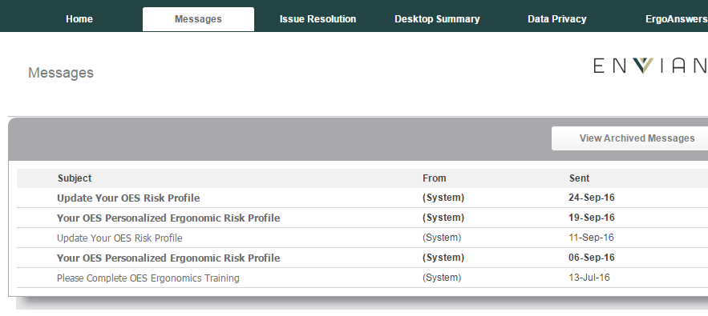
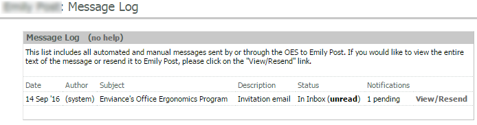

The Messages tab in the user dashboard displays a list of all the user's emails sent via the OES system.
Users can be directed to this page to view any OES emails that have been lost or deleted in their regular email client.
The Message Log as seen from the user dashboard looks like this:

As an administrator, you can get a more detailed view to check the messages that have been sent to the user and view the status from the Employee Summary > .

When users access a message, its status changes from "unread" to "read".
Message read status will not change for the user when an Administrator views a user's dashboard, and no log point is created.